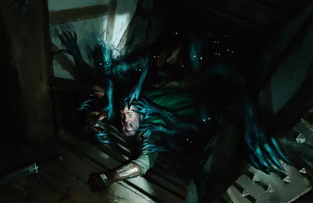

Тень
Shadow
Средняя Нежить, Хаотичная Злая

Класс Защиты 12 Инициатива +2 (12)
Хиты 27 (5к8 + 5)
Скорость 40 футов
| мод | спас | ||
|---|---|---|---|
| СИЛ | 6 | −2 | −2 |
| ЛОВ | 14 | +2 | +2 |
| ТЕЛ | 13 | +1 | +1 |
| мод | спас | ||
|---|---|---|---|
| ИНТ | 6 | −2 | −2 |
| МДР | 10 | +0 | +0 |
| ХАР | 8 | −1 | −1 |
Уязвимость к урону Излучение
Сопротивление урону Звук, Кислота, Огонь, Холод, Электричество
Иммунитеты Некротический, Яд; Бессознательный, Испуганный, Истощение, Окаменевший, Опрокинутый, Опутанный, Отравленный, Парализованный, Схваченный
Чувства Тёмное зрение 60 футов, пассивное Восприятие 10
Языки нет
Опасность 1/2 (100 опыта; БВ +2)
Особенности
Аморфность. Тень может перемещаться через пространства шириной хотя бы 1 дюйм, и она не затрачивает на это дополнительного перемещения.
Уязвимость к солнечному свету. Находясь под солнечным светом, Тень совершает с Помехой Тесты К20.
Действия
Высасывающий взмах. Бросок рукопашной атаки: +4, досягаемость 5 фт. Попадание: 5 (1к6 + 2) Некротического урона, и показатель Силы цели уменьшается на 1к4. Если при этом показатель Силы уменьшается до 0, цель умирает. Если Гуманоид умирает от этой атаки, через 1к4 часов из трупа поднимается новая Тень.
Бонусные действия
Теневая скрытность. Тень совершает действие Затаивание, если находится в области Тусклого света или Темноты.
Бонус мастерства +2
Среда обитания Город, Подземье, Царство теней
Сокровища Отсутствуют